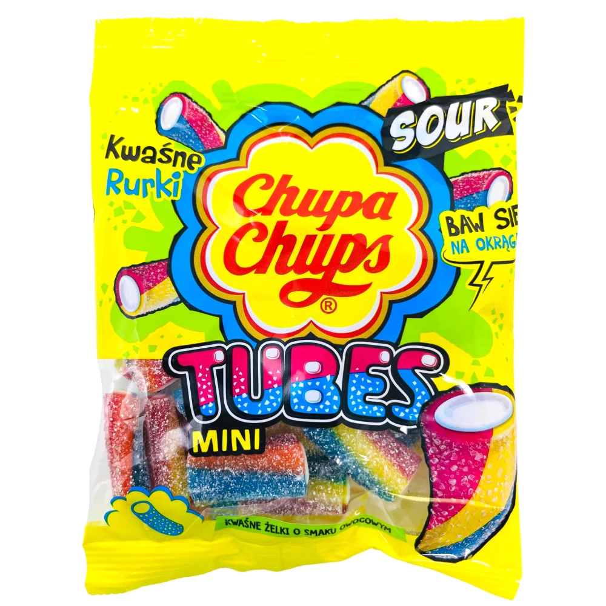
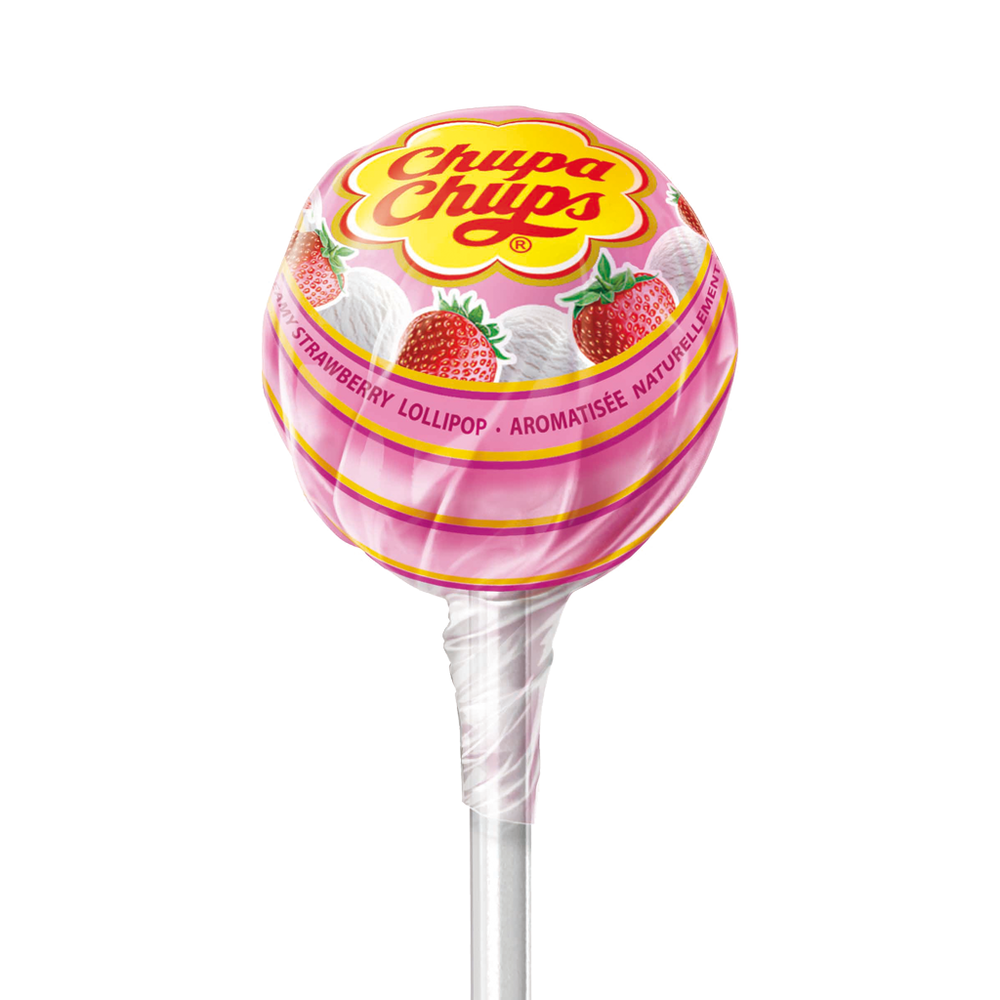

Overview of Chupa Chups Candy Company:
Chupa Chups is a renowned confectionery company that originated in Spain. Founded in 1958 by Enric Bernat, the company gained fame for its iconic lollipop design. The name "Chupa Chups" itself is derived from the Spanish verb "chupar," meaning "to suck." The innovative and eye-catching design of the lollipops, with a logo created by the world-famous artist Salvador Dalí, has contributed significantly to the brand's success.
Over the years, Chupa Chups has expanded its product range beyond lollipops to include various candies and gum. The company has a global presence, with its products being enjoyed by people of all ages in numerous countries.
Interesting facts
Dalí Connection: The renowned surrealist artist Salvador Dalí designed the Chupa Chups logo in 1969. Dalí's contribution added a touch of artistic elegance to the brand, and the logo is still recognized and appreciated today.
Innovation in Packaging: Chupa Chups is known for its inventive packaging designs. The company has often introduced unique and engaging ways to present its candies, making them not only delicious but also visually appealing.
Global Presence: Chupa Chups has a strong international presence and is distributed in over 150 countries. Its popularity spans continents, making it a globally recognized and enjoyed brand.
Variety of Flavors: Chupa Chups offers a wide array of flavors for its lollipops, ranging from traditional fruit flavors to more exotic and unique options. This variety caters to different taste preferences and keeps consumers excited about trying new flavors.
No Sticky Fingers: One of the unique selling points of Chupa Chups is its innovative wrapper that prevents sticky fingers. The wrapper is designed to crinkle neatly at the base of the lollipop, minimizing messiness.
Eye-Popping Imagery

Favorite: Creamy Strawberry
A blend of most loved juicy sweet strawberry taste with ice cream.
Image

Ingredients
Sugars (sugar, corn syrup) • Modified milk ingredients • Lactic acid • Natural and artificial flavours • Citric acid • Malic acid • Beet red • Salt.
Contains: Milk. May contain: Soy.
Nutritional Information
There is some basic nutritional information:
| Consumer Unit |
1 Pop (12g) |
| Calories |
45 |
| Fat |
0g |
| Carbohydrate |
11g |
| Sugars |
10g |
| Protein |
0g |
| Sodium |
10mg |